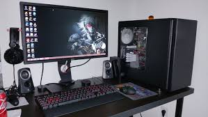
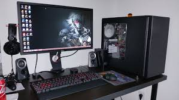

Over the Years...
Over the years I have played many games from different genres, I can't tell you just how many games I have played but if I were to guess I would say at least ove 800 different gaming titles from the day I got my first console (Playstation 2) to present day and the list continues to grow to this day. I think what intrigues me the most about video games are the stories they tell and the memories you make while playing them. Some of my best memories growing up with my family and friends can be tied to video games, whether it'd be a late night Team deathmatch session with my friends or a Rock Band tournament at a family get together.
This site is for anyone who may be interested in gaming or a specific genre of gaming but doesn't really have an idea where to start. I have chose some popular genres and chose some games I believe are the top games in those genres. These are my opinions.
IMPORTANT: I was going to include PC games but decided not to on the chance that since the person here is most likely new, they might not have a high end PC rig for these games. Although, the games mentioned can be played on multiple platforms, reviews will only be done from console perspective. Any extra games I have added or will add can be found in the Honorable Mentions tab and will include games that were close to making the cut.
Platforms I have played on:


 
